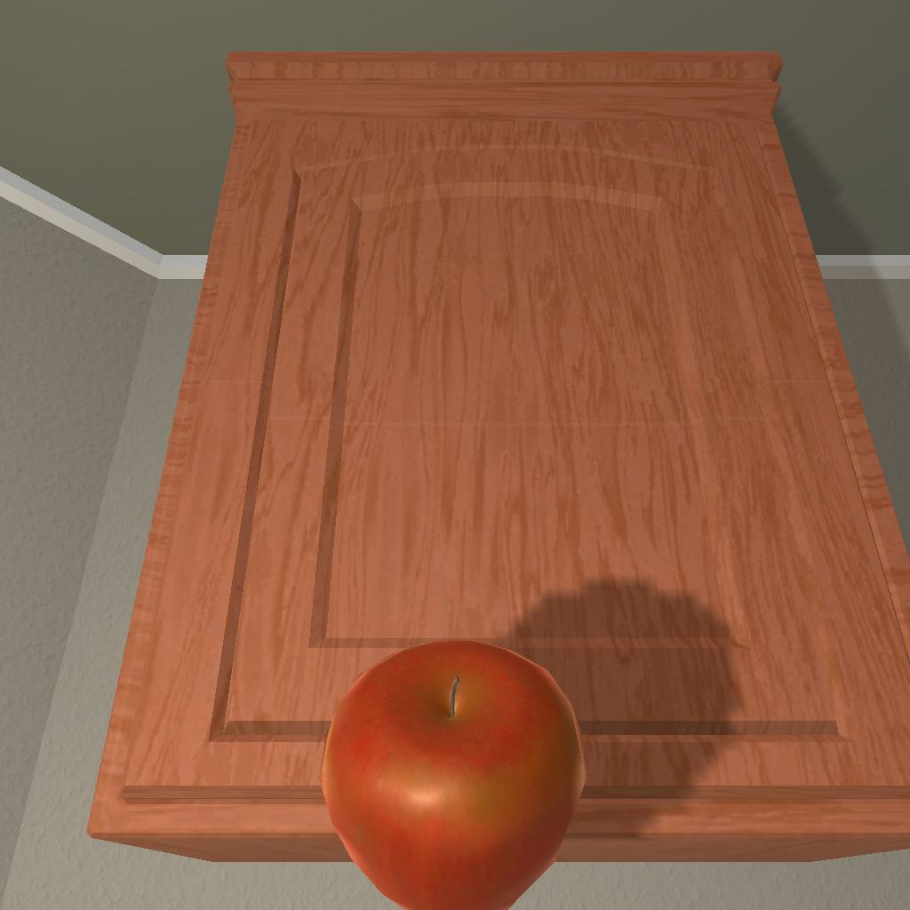

---------------------------------------------------------task: 19---------------------------------------------------------
--------------------------------------------------------------------------------------------------------------------------------------------------------------------
--------------------------------------------------------------------------------------------------------------------------------------------------------------------
Step:--------------------------------------------------------------------------10-------------------------------------------------------------------------------
----------------------------------------
VLM Prompt:
Image1:
**Instruction**
1. Analyze the provided image to identify all visible household objects, focusing on those relevant to the task description "cool some tomato and put it in microwave."
2. Use the analysis of the image and the task hint "The agent must find an object of the desired type, pick it up, go to a fridge, cool the object with the fridge, then find the correct location to place it, and put it down there. The agent does not need to use the fridge button or open the fridge to cool the object, and the agent just needs to do action that is "cool the object with the fridge"." to answer the question: what is the most reasonable action in the choices for the task description "cool some tomato and put it in microwave"?
4. Decide and write the answer using the template: The answer is: (i): , where i is the real number. If there is no desired object in the image, search every place based on **Initial Observation** to find the object. And if no one is exactly correct, choose a similar answer.
**Initial Observation**
You are in the middle of a room. Looking quickly around you, you can see cabinet (1-15), fridge (1), countertop (1-4), drawer (1-4), microwave (1), toaster (1), coffeemachine (1), garbagecan (1), sink (1), stoveburner (1-3), sinkbasin (1)
**Answer Choices**
(1): go to cabinet 2
(2): go to cabinet 3
(3): go to fridge 1
(4): go to countertop 1
(5): go to cabinet 4
(6): go to cabinet 5
(7): go to cabinet 6
(8): go to cabinet 7
(9): go to drawer 1
(10): go to drawer 2
(11): go to cabinet 8
(12): go to drawer 3
(13): go to cabinet 9
(14): go to cabinet 10
(15): go to drawer 4
(16): go to microwave 1
(17): go to cabinet 11
(18): go to toaster 1
(19): go to cabinet 12
(20): go to cabinet 13
(21): go to cabinet 14
(22): go to cabinet 15
(23): go to countertop 2
(24): go to coffeemachine 1
(25): go to garbagecan 1
(26): go to countertop 3
(27): go to countertop 4
(28): go to sink 1
(29): go to stoveburner 1
(30): go to stoveburner 2
(31): go to stoveburner 3
(32): go to sinkbasin 1
(33): open cabinet 1
(34): close cabinet 1
(35): put apple 1 in/on cabinet 1
(36): examine apple 1
(37): examine cabinet 1
**Answer**
Let's think step by step by following the instructions.
----------------------------------------
----------------------------------------
Original Response:
The task is to cool some tomato and put it in the microwave. From the initial observation, we know where the fridge and microwave are located. The image provided shows an apple on a countertop, but we are looking for a tomato, not an apple. Since the image does not show a tomato, we must search other places based on the initial observation to find the object.
The most reasonable action to begin with would be to go to the fridge to cool the tomato once we find it. However, the instructions state that the agent does not need to use the fridge button or open the fridge to cool the object; the agent just needs to perform the action "cool the object with the fridge."
Therefore, the first step is to find the tomato. Since no tomatoes are visible in the image, we would need to search the cabinets and drawers where food items are typically stored. Once the tomato is found, the next step would be to cool it with the fridge.
Given the options provided, the most reasonable action to start the task would be to search the cabinets, as they are more likely to contain a tomato than drawers, which typically contain utensils and other non-food items. Since we do not have specific information on which cabinet may contain the tomato, we can start by checking the cabinets closest to the fridge for efficiency.
The answer is: (2): go to cabinet 3.
----------------------------------------
----------------------------------------
>>> Refine Original VLM Response and Get Pure Action: go to cabinet 3
----------------------------------------
-----------------------------------------------------------------
Running time: 93.40891027450562 seconds
Total Money: 6.60259
-----------------------------------------------------------------
-----------------------------------------------------------------
Text Observation:You arrive at loc 2. The cabinet 3 is closed.
-----------------------------------------------------------------
UNSUCCEED